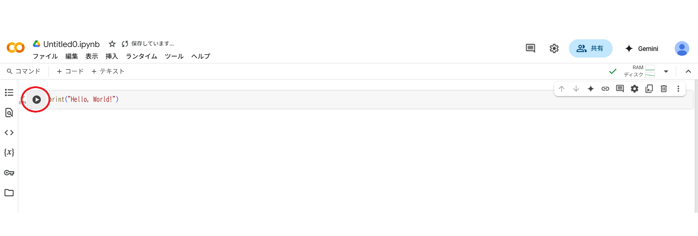

ビジネスパーソンのための
「生成AI x Python」はじめの一歩
～ GeminiとGoogle Colabで業務効率化体験 ～
講師： 本松慎一郎
日付： 2025年5月9日
1. はじめに
本日のゴールと講義の流れ
- 生成AI（Gemini）がプログラミングや業務効率化に役立つことを理解する
- Geminiに指示してPythonコードを生成し、Google Colabで実行する流れを体験する
- プログラミングに対する心理的なハードルを下げる
- 今後の学習意欲や活用イメージを持つ
理解
体験
未来へ
1. はじめに
なぜ今、ビジネスパーソンがプログラミングに触れると良いのか？
- AI時代におけるスキルの変化：
- AIを「使う側」になるために、AIと対話する能力が重要に。
- プログラミング的思考（論理的思考、問題解決能力）はAI活用にも役立ちます。
- 業務効率化の可能性：
- 簡単な定型業務なら、AIに指示して自動化できるかも？
- データ分析やレポート作成のヒントを得られるかも？
- 生成AIとプログラミングの強力な連携：
- 従来は専門知識が必要だったプログラミングのハードルを、生成AIが大幅に下げてくれます。
- 「こんなことがしたい」を言葉で伝えるだけで、AIがコードを提案してくれます。
2. 生成AI「Gemini」に触れてみよう
Geminiとは？
- Googleによって開発された高性能な生成AIです。
- 様々な種類の情報を理解し、組み合わせて応答することができます。
- テキスト（文章）、画像、音声、動画、そしてコードなど
- 何ができるの？（例）
- 質問応答、文章作成・要約、翻訳
- アイデア出し、ブレインストーミング
- そして、Pythonなどのプログラミングコードの生成！
- 得意なこと：大量の情報に基づいた応答、創造的なテキスト生成
- 苦手なこと（注意点）：事実と異なる情報を生成する可能性（ハルシネーション）、最新すぎる情報には対応できない場合がある
2. 生成AI「Gemini」に触れてみよう
Geminiへの「良い指示（プロンプト）」の基本
AIから期待する答えを引き出すには、明確で具体的な指示が重要です。
- 役割を与える：「あなたは優秀なマーケターです」「あなたは経験豊富なプログラマーです」など
- 具体的に書く：何を、どのように、どんな形式で、何文字くらいで、など
- 背景情報を伝える：何のために使うのか、どんな状況か
- 段階的に指示する：複雑なことは一度に頼まず、分けて指示する
今日のポイント： プログラミングコードを生成してもらう場合は、
「何をしたいか」「どんなデータを使うか」「期待する結果は何か」を明確に伝えましょう！
デモンストレーション（プログラミング以外での活用イメージ）
例：
- 「新商品のキャッチコピーを3つ提案してください。ターゲットは30代女性、商品の特徴はオーガニック素材です。」
- 「以下の文章を小学生にもわかるように要約してください。[長文を貼り付け]」
3. PythonとGoogle Colabの準備運動
Pythonとは？
- シンプルで読みやすい文法が特徴のプログラミング言語です。
- 初心者にも比較的学びやすいと言われています。
- Web開発、データ分析、AI開発、業務自動化など、幅広い分野で活用されています。
- ビジネスシーンでは、Excel作業の自動化、簡単なデータ集計・可視化などに使えます。
Google Colabとは？
- Googleが提供する、ブラウザ上でPythonを記述・実行できる無料のサービスです。
- メリット：
- 面倒な環境構築が不要（PCに何もインストールしなくてOK！）
- 無料で利用可能（一部制限あり）
- Googleアカウントがあればすぐに始められる
- 作成したファイルはGoogle Driveに保存・共有可能
3. PythonとGoogle Colabの準備運動
Google Colabの基本操作：ノートブックの新規作成
- Google Driveを開きます。
- 「新規」ボタンをクリックします。
- 「その他」 > 「Google Colaboratory」を選択します。
(もし表示されない場合は、「アプリを追加」から「Colaboratory」を検索して接続してください)
または、https://colab.research.google.com/ に直接アクセスし、「ファイル」メニューから「ノートブックを新規作成」でもOKです。
Google Colabの基本操作：コードセルとテキストセル
Colabのノートブックは、「セル」という単位で構成されます。
- コードセル： Pythonのコードを記述し、実行するためのセルです。
- テキストセル： 説明文や見出しなどを記述するためのセルです（このスライドのような文章を書けます）。
3. PythonとGoogle Colabの準備運動
簡単なPythonコードの実行体験
早速、最初のコードを実行してみましょう！
1. コードセルに以下のコードを入力（またはコピー＆ペースト）します。
2. コードセルの左側にある再生ボタン (▶) をクリックするか、Shift + Enter キーを押して実行します。
実行すると、セルの下に結果が表示されます。
`print()` は、指定した文字や数値などを画面に出力するPythonの命令です。
4. 本番！GeminiにPythonコードを作ってもらおう
いよいよ、GeminiにPythonコードを生成してもらい、Colabで実行する流れを体験します。
体験の流れ（4ステップ）
- ステップ1：やりたいことを明確にする
- ステップ2：Geminiにプロンプトを入力してコードを生成
- ステップ3：生成されたコードをColabで実行
- ステップ4：コードの意味をGeminiに聞いてみる
4. 本番！GeminiにPythonコードを作ってもらおう
ステップ1：やりたいことを明確にする
例：簡単な業務課題をPythonで解決してみましょう。
今日の課題：
「会議参加者リスト（文字列）から、参加人数をカウントし、参加者名を五十音順に並び替えて表示するPythonコードをGeminiに作ってもらう」
元データ（例）: 「田中一郎, 鈴木花子, 佐藤健太, 山田太郎, 高橋さくら」
ステップ2：Geminiにプロンプトを入力してコードを生成
Geminiに以下のようなプロンプト（指示）を入力します。
ポイント：「何をしたいか」「どんなデータか」「どんな結果がほしいか」を具体的に伝える！
4. 本番！GeminiにPythonコードを作ってもらおう
ステップ2続き：Geminiが生成したコードを確認
GeminiがPythonコードを生成してくれます。（生成されるコードは毎回完全に同じとは限りません）
注意： 生成AIが作るコードは常に完璧とは限りません。意図通りか確認したり、時には修正が必要な場合もあります。
ステップ3：生成されたコードをColabで実行
- Geminiが生成したPythonコードをコピーします。
- Google Colabの新しいコードセルに貼り付けます。
- 実行ボタン (▶) をクリックします。

期待通り、参加人数と並び替えられたリストが表示されましたか？
もしエラーが出た場合：
- エラーメッセージをよく読んでみましょう（最初は難しく感じるかもしれません）。
- エラーメッセージをGeminiに伝えて、「このエラーはどういう意味ですか？どうすれば修正できますか？」と聞いてみるのも有効です。
- エラーメッセージをGeminiそのままGeminiに張り付けるだけでも多くの場合エラーをGeminiが修正してくれます。
4. 本番！GeminiにPythonコードを作ってもらおう
ステップ4：コードの意味をGeminiに聞いてみる
生成されたコードが何をしているのか、よくわからない部分があるかもしれません。
そんな時は、Geminiにコードを提示して、「このPythonコードの各行が何をしているか、初心者にもわかるように解説してください」と頼んでみましょう。
このように、Geminiはコード生成だけでなく、学習のサポートもしてくれます。
試してみよう（時間があれば）：
- 元の参加者リストに新しい名前を追加して、再度実行してみる。
- 並び順を「降順」（逆順）にするにはどうすれば良いか、Geminiに聞いてコードを修正してみる。
5. まとめと次のステップ
本日の振り返り：体験を通して何ができたか
- 生成AI（Gemini）の基本的な使い方と、「良い指示」の重要性を理解した。
- Python実行環境（Google Colab）の簡単な使い方を体験した。
- 「やりたいこと」をGeminiに伝えることで、Pythonコードが自動で生成されることを体験した。
- 生成されたコードを実行し、結果を得ることができた。
- 生成AIがコードの解説もしてくれることを知った。
達成！
プログラミングの最初の一歩、踏み出せましたね！
5. まとめと次のステップ
生成AIを活用したプログラミングの可能性
- 定型業務の自動化： メール作成、ファイル整理、簡単なレポート作成など。
- データ分析・可視化の補助： Excelデータの集計、グラフ作成のコード生成。
- アイデアのプロトタイピング： 新しいサービスのアイデアを簡単なプログラムで試作。
- 学習ツールとして： わからないことを質問したり、コードの解説を求めたり。
今後の学習のためのヒント
- まずは今日の体験を元に、身の回りの小さな「こうなったら便利だな」をGeminiに相談してみましょう。
- Pythonの入門書やオンライン学習サイトで基礎を少しずつ学んでみるのも良いでしょう。（Geminiに「Pythonの優しい入門サイト教えて」と聞いてもOK！）
- エラーを恐れず、色々試してみることが大切です。エラーが出たらGeminiに聞いてみましょう。
プログラミングはあくまで「手段」です。皆さんのビジネス上の目的を達成するために、生成AIとプログラミングをどう活かせるか、という視点を持ってみてください。
演習
演習1：
- Geminiで「＋チャットを新規作成」で、新しいチャットを開いてください。
- Geminiに以下のようなプロンプト（指示）を入力します。
Colaboで「＋コード」を押下して新たなコードセルを作成し、Geminiで作ったコードをコピー＆ペーストして実行してみてください。
演習2：
- Geminiで「＋チャットを新規作成」で、新しいチャットを開いてください。
- Geminiに以下のようなプロンプト（指示）を入力します。
Colaboで「＋コード」を押下して新たなコードセルを作成し、Geminiで作ったコードをコピー＆ペーストして実行してみてください。
質疑応答
ご清聴ありがとうございました。